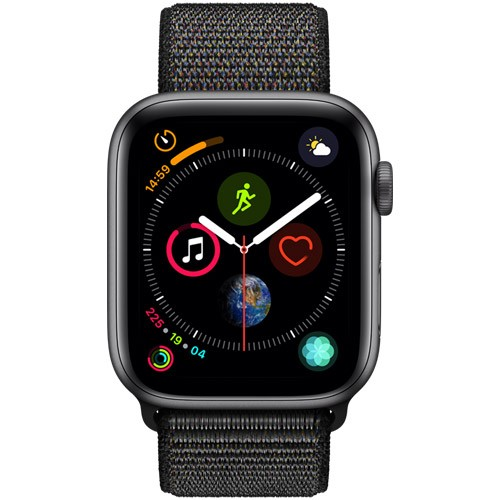
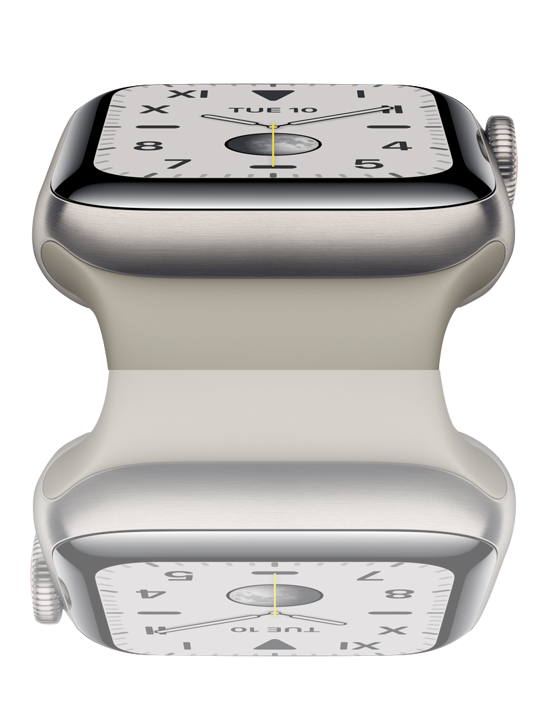
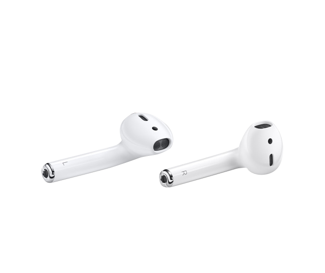
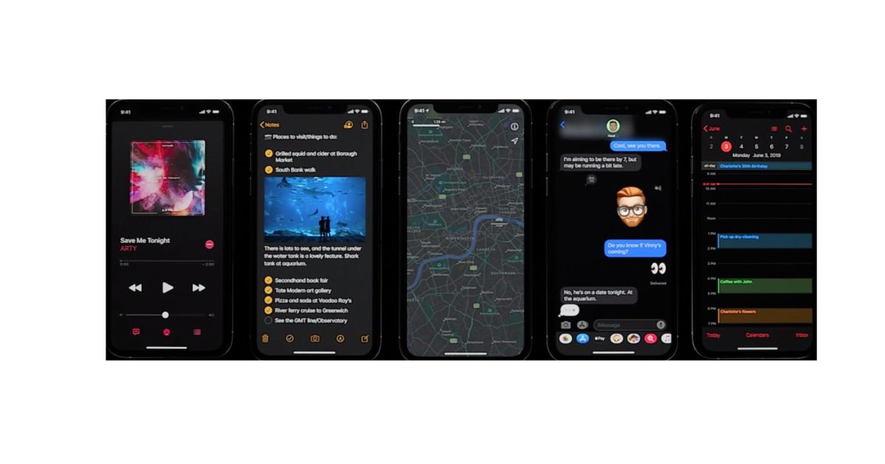

구석구석 자신에 맞게 꾸미는 시계 페이스. 어느 시계 페이스든, 원하는 앱이나 특정 기능을 바로 쓸 수 있게 해주는 컴플리케이션을 골라 필요에 따라 구성할 수 있습니다.
덕분에 한눈에 더 많은 정보를 확인하고, 터치 한 번에 더 많은 일을 할 수 있죠. 가능성은 수백 가지. 게다가 ‘인포그래프’와 같은 페이스에는 컴플리케이션을 무려 아홉 개까지 띄울 수 있습니다.

상시표시형 Retina 디스플레이. 시계 페이스에 담긴 시간 또는 그 밖의 정보를 보기 위해, 더 이상 손목을 들어 올리거나 화면을 터치할 필요가 없습니다.
디스플레이가 절대 잠들지 않으니까요. 덕분에 자전거를 타고 있을 때도, 복근 운동으로 열심히 땀을 빼는 중에도, 혹은 회의 중에 시간이 얼마나 흘렀는지를 알고 싶을 때도, 흘깃 보는 것만으로 필요한 수치를 바로 확인할 수 있습니다.

방대한 Apple Music 라이브러리, 그리고 애청 팟캐스트를 맘껏 즐길 수 있습니다

추가 기능으로, 새로운 다크 모드는 장치의 배터리 수명을 최소한으로 연장 할 수 있습니다. 최신 iPhone의 OLED 화면은 검정을 표시하는 데 전력을 사용하지 않으므로 어두운 모드를 선택하면 이론적으로 배터리 소비가 줄어 듭니다. 이는 iOS 13의 성능을 개선하려는 Apple의 전반적인 목표와 일치합니다.
이제 애플워치5로도 다크모드를 즐길 수 있습니다.